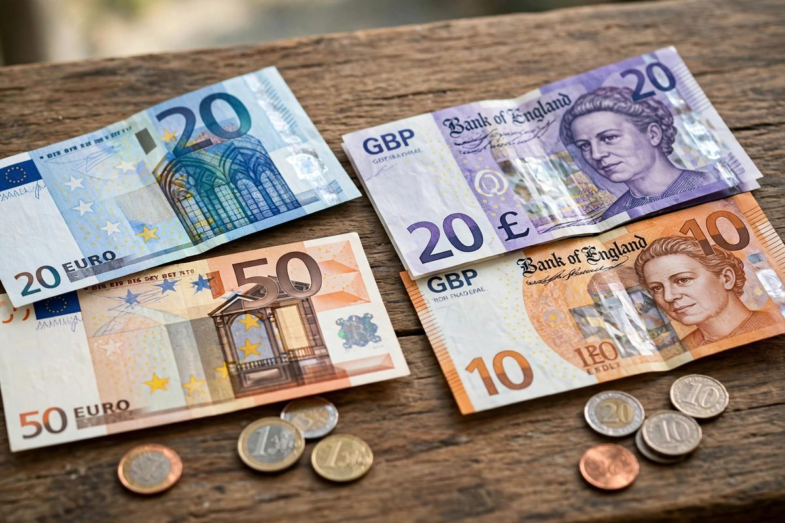

EUR to GBP: Converting Euros to Pounds in 2026

The euro-pound rate
The euro to pound rate reflects the economic relationship between the eurozone and the UK, and it is driven by the difference between European Central Bank and Bank of England interest rates, by inflation, and by political news in either bloc. Since the UK left the EU, the rate has also reacted to trade and regulatory news, and it has generally traded between 0.83 and 0.90 pounds per euro. For most people converting money, the exact level matters less than the cost of the conversion itself.
Because the euro and the pound are both major currencies, spreads are tight and competition between providers is strong. That is good news for consumers: a good provider should convert euros to pounds for under one percent in total cost, and anyone charging three percent or more is expensive by current standards. Check the live mid-market rate on our converter before any conversion.
Cheapest ways to convert EUR to GBP
For transfers to a UK bank account, an online specialist service is usually cheapest and fastest, delivering within a day for most amounts. Multi-currency accounts are a strong alternative, especially if you regularly move money between the eurozone and the UK, since you can hold both currencies and convert when the rate suits you. Traditional banks in either the eurozone or the UK typically charge two to four percent, and they are rarely the best choice for a transfer.
For spending in the UK, a euro-denominated fee-free card works well, converting at close to the mid-market rate when you pay in pounds. If you hold pounds in a multi-currency account, spending them directly avoids conversion altogether. Withdrawing pounds from a UK ATM with a euro card is reasonable, though the ATM operator may add a fee, so prefer card payments where possible.
Mistakes to avoid
The most common mistake is accepting conversion into euros at a UK till or ATM, which is dynamic currency conversion and always uses a poor rate. Another is exchanging cash at a bureau, where spreads of five percent or more are common for this pair. A third is converting a large sum in a hurry after a news event, which locks in a rate driven by panic rather than value; unless you need the money immediately, a few days of patience often helps, though no one can reliably time the market.
For large or regular transfers, consider setting up a rate alert with your provider, so you are notified when the rate reaches a level you like. This removes the need to watch the market daily and helps you convert at a better moment. Whatever method you choose, compare the total pounds received, not the fee alone, and switch providers when a better one appears.
Putting It Into Practice
If you move money between euros and pounds regularly, open a multi-currency account and hold a balance in both currencies, converting when the rate suits you rather than when a payment is due. Set a rate alert for the level you want, and compare specialist providers on the total received before any large transfer. For travel, pay in the local currency at every till, and check your statements during the trip so any wrong charge can be fixed while you are still there.
Frequently Asked Questions
How many pounds do I get for 100 euros?
At 0.85 pounds per euro, about 85 pounds at the mid-market rate, less after any spread or fee.
What is the cheapest way to convert EUR to GBP?
An online specialist service or a multi-currency account, usually under one percent, versus two to four percent at a bank.
Should I pay in euros or pounds in the UK?
Pay in pounds. Paying in euros triggers dynamic currency conversion at a poor rate.